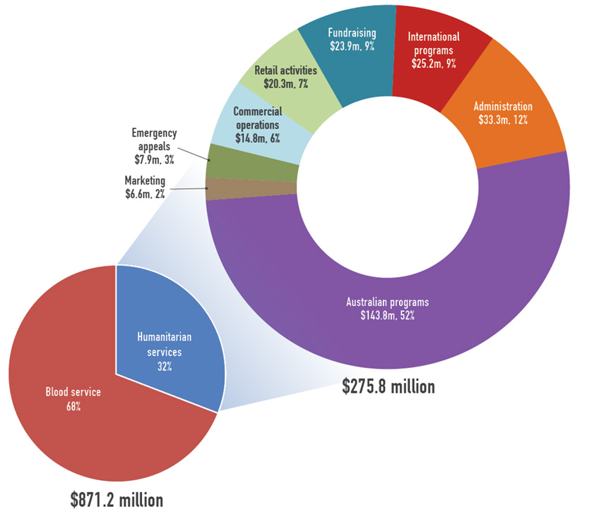
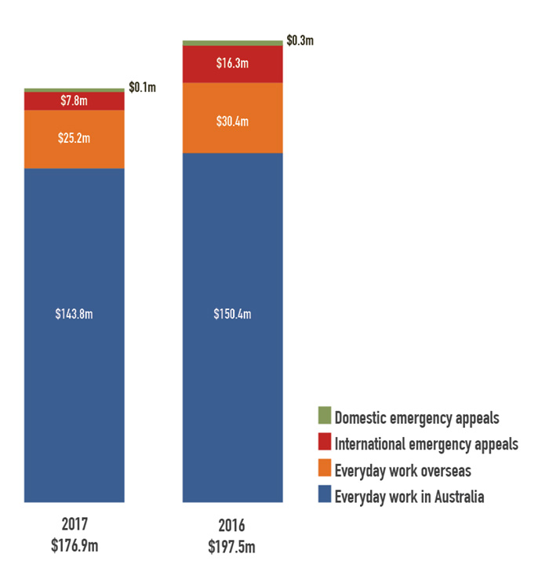
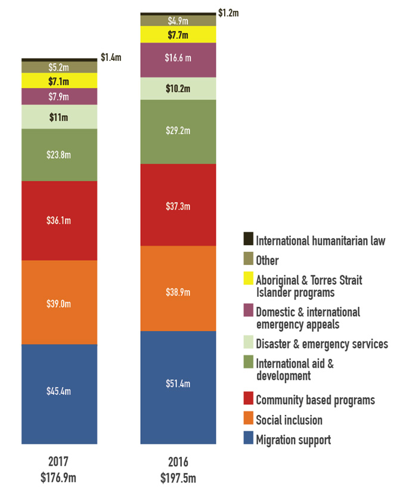

Overall expenditure for the Society was $871.2 million, including $595.4 million (68%) expended by the Blood Service operating division. Expenditure within the Humanitarian Services operating division decreased by $21.7 million to $275.8 million this financial year. This 7% decrease is largely due to a $8.8 million reduction in disaster appeal response spending (with no significant disasters in the Asia-Pacific region this year), $6.0 million reduced spending on migration support programs (following on from the reduction in government funding for this area of our work) and a $5.4 million reduction in our International Aid & Development programs (again reflecting a reduction in government funding).
The percentage of Humanitarian Services operating division expenditure incurred on Australian programs increased slightly this year from 51% to 52%, whilst our expenditure on International programs reduced slightly from 10% to 9%. Fundraising costs for Humanitarian Services operating division comprise 9% of total expenditure (8% in 2016). This includes all expenditure associated with fundraising for our services, administration of emergency appeals and managing pro bono work and non-cash gifts (which are not recognised in the financial accounts). The cost of fundraising was 26% (comparable with 2016); excluding income from disaster appeals it was 27% (28% in 2016), reflecting the investment required to produce reliable and sustainable ongoing income streams to enable our work.
Administration costs for Humanitarian Services operating division accounted for 12% of total expenditure (11% in 2016). These costs include information technology, finance, human resources and occupancy expenses, and are critical to making our services run smoothly and effectively.
Our humanitarian work in Australia and overseas
(including emergency appeals)

$176.9 million was incurred in providing humanitarian service in Australia and overseas. Over 95% of expenditure was on everyday work with individuals and communities, while the remaining expenditure was spent responding to emergencies in Australia and overseas.
The majority of non-emergency spending ($143.8 million) was for domestic services in Australia, while $25.2 million was spent on everyday work overseas in the Asia–Pacific region. In our emergency appeal work, $0.1 million was spent responding to emergencies in Australia while $7.8 million was spent helping people impacted by disasters overseas such as the food crisis in East Africa and the humanitarian challenges in Syria. The proportion of funds spent in emergencies locally versus internationally varies from year to year, depending on the location and severity of disasters and the need being responded to.
Humanitarian program spend (including emergency appeals)

$176.9 million was incurred in providing programs, a 10% reduction from 2016. This reduced program expenditure was largely attributable to a $5.4 million decrease in our International Aid & Development program and a $6.0 million decrease in Migrant Support services. Despite reduced funding received, our work supporting migrants in transition is still our greatest program expenditure and we remain dedicated to delivering much-needed services in this area.
Social inclusion services account for the second-largest share of expenditure ($39.0 million), representing our work with people experiencing exclusion from mainstream society due to age, disability, mental ill health, involvement with the justice system, or other factors. Community-based programs were close behind with $36.1 million expenditure, comprising our work with specific communities experiencing entrenched disadvantage.